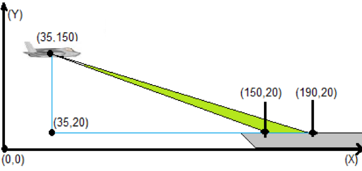

Problem made by Lockheed Martin, is CodeQuest 2017 Problem 8
This problem has a difficulty of 50
You are in charge of directing a state-of-the-art, fifth-generation fighter jet to a safe landing aboard the USS Quest Aircraft Carrier. If the aircraft glide-slope is too steep or too shallow, you must indicate to the pilot that he or she must abort the landing and retry. Only when the glide slopes to the targeted landing zone are within tolerances are you to indicate to the pilot that he or she may commit to the landing.
You must calculate the glide slopes and determine if they are within tolerance for a safe landing. If the slope of approach is between -.8 and -1.6 (inclusive), the aircraft is clear to land – otherwise it is waved off. Because you are landing on a carrier, you must consider both the slope between the plane and the front of the landing zone as well as the slope between the plane and the end of the landing zone. Both slopes must be within tolerance for a safe landing.

The first line of the file Prob08.in.txt will contain a positive integer T denoting the number of test cases that follow. Each test case will have the following input:
• The first line of each test case will contain a positive integer N denoting the number of aircraft sections that follow. Each aircraft section will have the following four input lines:
o The name of the aircraft
o The X and Y coordinates of the aircraft separated by a comma
o The X and Y coordinates of the start of the landing zone separated by a comma
o The X and Y coordinates of the end of the landing zone separated by a comma
2
1
ExamplePlane
35,150
150,20
190,20
2
Freebird
25,220
150,20
190,20
Lightning
75,140
110,20
150,20
Your program should give instructions to the aircraft in the order they were encountered in the input file. For a given aircraft, there are two possible outputs:
[Aircraft Name], Clear To Land!
Or
[Aircraft Name], Abort Landing!
ExamplePlane, Clear To Land!